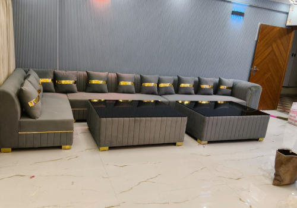

A sofa is one of the most frequently used pieces of furniture in any home. After years of daily use, its cushions may become flat, the fabric may start tearing or the frame may begin making creaking noises. Buying a new sofa can be expensive, especially when your existing one still has a good design and a usable structure.
The good news is that you may not need to replace the entire sofa. With the right inspection and repair, many old sofas can become comfortable and attractive again. Athar Sofa Repair Center provides doorstep sofa repair services in Noida, helping homeowners explore practical options for damaged cushions, worn upholstery, weak springs and wooden frames.
Before spending money on new furniture, it is worth understanding what can be repaired and how much work your sofa actually needs.
What Sofa Problems Can Be Repaired?
The cost of sofa repair depends on the type of damage. Sometimes, replacing one worn component is enough to improve the sofa significantly.
1. Sofa Cushion and Foam Replacement
Do your couch cushions sag when you sit down or lose their shape and become uncomfortable after years of use? Cushions often flatten because the foam or seat support is worn or weakened. Depending on the condition, comfort may be restored by replacing the foam or fixing the underlying support.
Before choosing new foam, consider how firm you want your sofa to feel and how frequently it is used. The right replacement should suit your seating needs rather than simply making the cushions look fuller.
2. Sofa Fabric Change and Upholstery Repair
Torn fabric, faded colours, loose stitching and worn corners can make an otherwise good sofa look old. If the frame is still strong, changing the upholstery can give it a fresh appearance without the expense of purchasing a completely new sofa.
When selecting fabric, consider durability, cleaning requirements, comfort and your home's interior. A sofa used daily by a family may need a different material from one used occasionally in a guest room. If you are considering a complete refresh, explore our sofa repair services or read more about sofa cloth change.
3. Sofa Frame and Spring Repair
A sofa that creaks, wobbles or sinks unevenly may have loose wooden joints, damaged springs or weakened support. Ignoring these problems can make the sofa increasingly uncomfortable.
A proper inspection helps identify the cause. Depending on the damage, the solution may involve strengthening wooden joints, repairing or replacing springs, or restoring the seating support. If the frame is structurally sound, repairing these components may be more practical than replacing the entire sofa. Extensive structural damage needs careful assessment before you decide.
4. Leather and Leatherette Sofa Repair
Leather and leatherette sofas can develop cracks, peeling surfaces, damaged stitching and worn areas over time. The appropriate repair depends on the material and the extent of the damage. Some minor problems may be suitable for stitching or surface treatment, while severely damaged upholstery may require replacement. An inspection helps determine which option is realistic.
5. Sofa-Cum-Bed and Wooden Sofa Repair
A sofa-cum-bed may develop problems with its hinges, folding mechanism or locking parts. Wooden sofas can also need joint strengthening or repairs to damaged sections. Instead of assuming that the entire piece of furniture needs replacement, identify the faulty component first. Repairing a specific part may be sufficient, depending on its condition.
Sofa Repair Price List in Noida
The following starting prices are published on the Athar Sofa Repair Center website. They are a guide to the listed services, not a final quote: the actual cost depends on the sofa, the damage, the amount of work and the materials selected.
| Sofa service | Starting price | Price details |
|---|---|---|
| Sofa repair | ₹899 onwards | General repairs, including frame, spring and structural work. |
| Foam replacement | ₹799 per cushion | Price is listed per cushion; foam type and fit affect the work. |
| Sofa upholstery | From ₹1,199 | Service-card starting price; fabric and scope affect the estimate. |
| Full sofa reupholstery | ₹2,999 onwards | Separate full-reupholstery price listing; depends on sofa size and material. |
| Sofa loose cover | From ₹799 | Custom cover pricing depends on fit and fabric selection. |
| Cushion cover | From ₹699 | Custom cushion-cover service. |
| Leather sofa repair | From ₹699 | Repair requirements vary with the type and extent of damage. |
| Sofa-cum-bed repair | From ₹599 | Mechanism, hinge, lock and frame issues require assessment. |
| Sofa chair repair | From ₹699 | Final cost depends on whether the work involves upholstery, foam or frame repair. |
| Recliner repair | ₹1,399 onwards | Separate recliner listing for motor, mechanism and fabric issues. |
| Wooden sofa repair | From ₹599 | Frame, joint and other structural work can vary by condition. |
| Dining sofa repair | From ₹499 | Upholstery, cushion, foam and wooden-frame work may affect the estimate. |
Upholstery and full reupholstery appear as separate price listings on our website: ₹1,199 is the starting price shown for the upholstery service, while full reupholstery is listed from ₹2,999. The final estimate depends on the sofa and work required. View the website's popular pricing or contact us for an assessment.
The main factors affecting your sofa repair estimate include:
- Sofa size and design: A three-seater, L-shaped sofa and sofa-cum-bed can require different amounts of work.
- Type of damage: Cushion repair, foam replacement, frame repair and upholstery change have different costs.
- Material selection: Foam quality and the type of fabric, leather or leatherette influence the final estimate.
- Frame and spring condition: Additional structural work may increase the total cost.
- Labour and repair complexity: The time and skill required depend on the sofa's condition.
Send your sofa type, Noida sector and photos of the damage to discuss the work. An inspection helps confirm which service applies and what materials are needed. Request a current estimate before approving the repair.
Why Choose Athar Sofa Repair Center in Noida?
When choosing a sofa repair service, consider the repair options, convenience and clarity of the estimate. Athar Sofa Repair Center offers services such as cushion and foam replacement, upholstery change, stitching, frame and spring repair, leather sofa repair, wooden sofa repair and sofa-cum-bed repairs.
- Doorstep convenience: An at-home inspection can save you the trouble of moving a heavy sofa.
- Free estimation: Discuss the damage and understand the proposed work before agreeing to a repair.
- Options for different budgets: Ask whether one component can be repaired instead of replacing or reupholstering the whole sofa.
- Practical guidance: Understanding the condition of the frame, foam, springs and upholstery can help you decide between repair and replacement.
Our aim is to help you understand your options and choose a repair that fits your sofa's condition and your budget.
Sofa Repair Services in Noida and Nearby Areas
Finding a service that covers your locality is an important part of planning a repair. Athar Sofa Repair Center serves customers across Noida, Greater Noida, Noida Extension and selected areas of Ghaziabad.
Service coverage includes Noida sectors and localities such as Sector 62, Sector 63, Sector 76 and Sector 93, along with areas in Greater Noida such as Alpha, Beta, Gamma, Delta, Pari Chowk and Knowledge Park . Noida Extension localities include Gaur City and Techzone 4.
If your sofa has sagging cushions, damaged springs or torn upholstery, a professional inspection can help you understand which parts need attention. You can explore our affordable sofa repair service in Noida to learn about the available repair options.
How to Decide Whether to Repair or Replace Your Sofa
Before making a decision, check these four things:
- Frame condition: A strong frame is usually a good starting point for restoration.
- Cushion comfort: If flattened foam is the main issue, replacing it can make the seat more comfortable.
- Upholstery condition: Worn or old fabric can often be changed if the sofa can be reupholstered.
- Total repair estimate: Compare the repair cost with the price of a sofa that suits your needs.
If several major components are badly damaged, replacement may be more sensible. However, if the frame remains usable and only a few parts need attention, repairing the sofa could help you avoid an unnecessary purchase.
Frequently Asked Questions
Is sofa repair cheaper than buying a new sofa?
It can be, especially if the frame is in good condition and the main issues are with the foam, cushions, springs or upholstery. Actual savings depend on the repairs required and the materials you choose.
Do you provide free sofa repair estimates in Noida?
Athar Sofa Repair Center offers free inspection and estimation. Contact the team to discuss your sofa's condition and confirm arrangements for your location.
Can an old sofa be repaired at home?
Yes. Some sofa repair work, such as cushion, foam and upholstery jobs, as well as certain spring and frame repairs, can be handled at home. The suitable approach depends on the sofa and the repair required.
Which areas do you serve?
Athar Sofa Repair Center serves Noida, Greater Noida, Noida Extension and selected areas of Ghaziabad. Confirm your exact locality before booking.
Repair what you can, and decide with confidence.
An old sofa does not always need to be replaced. Flat cushions, worn fabric, loose springs and certain frame problems may be repairable, depending on the condition of the furniture. Compare the website's starting prices, then contact Athar Sofa Repair Center to discuss your sofa and request a free estimate.